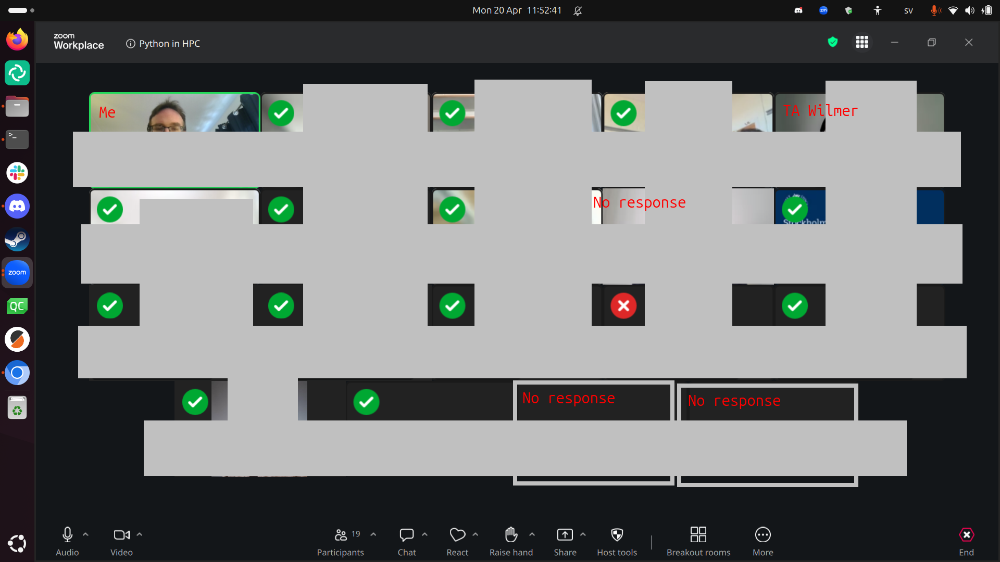
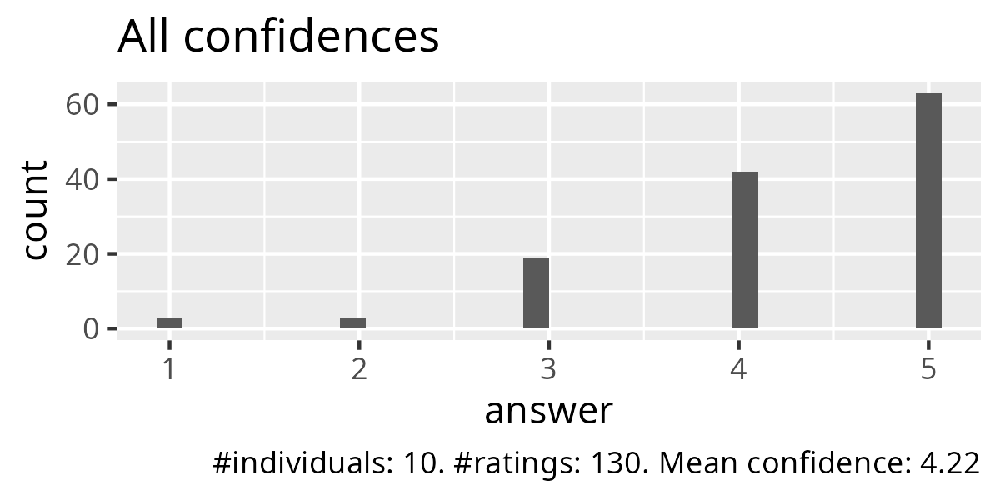
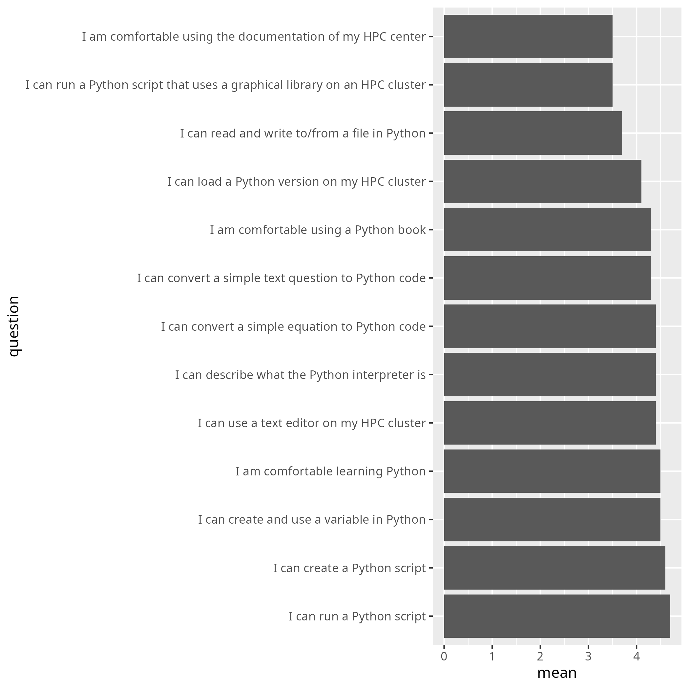
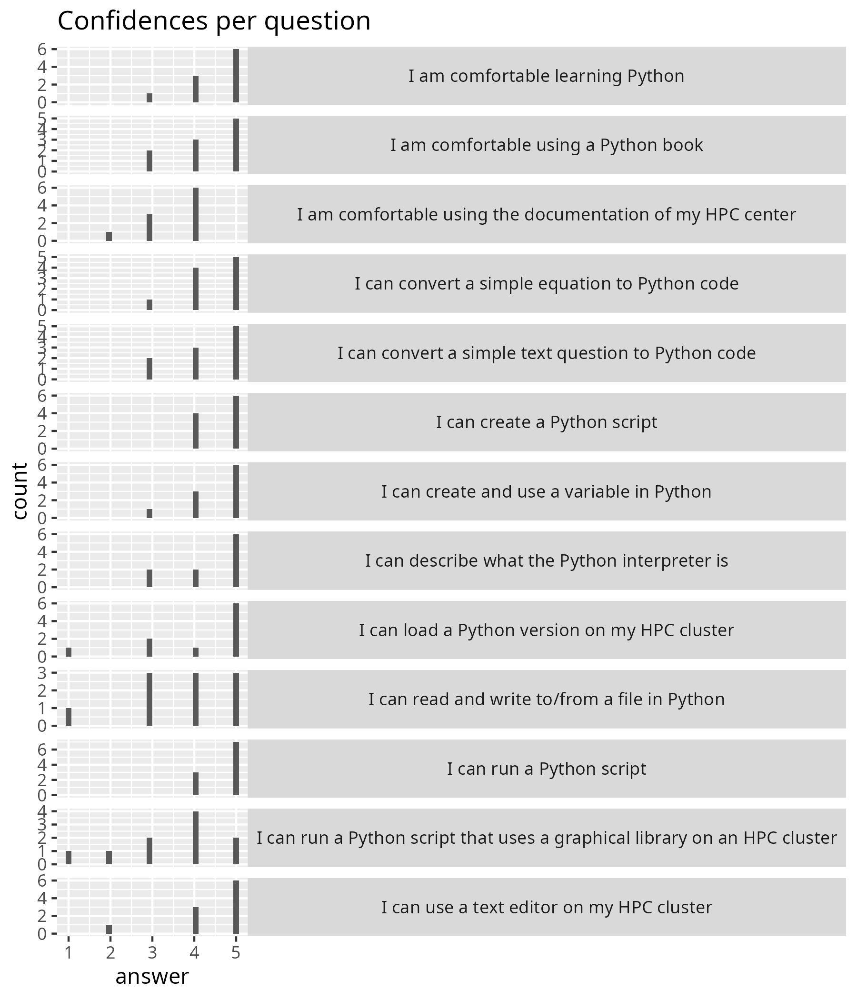
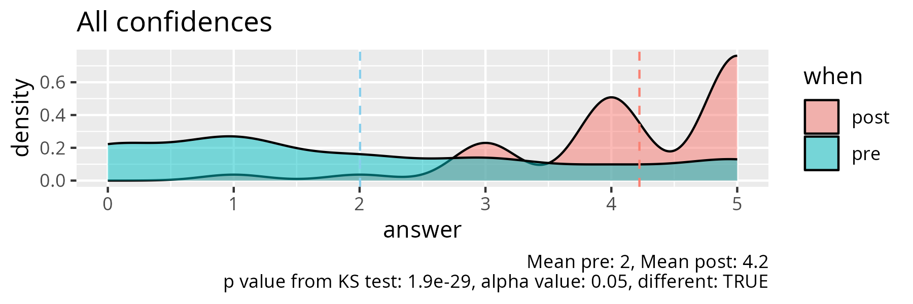
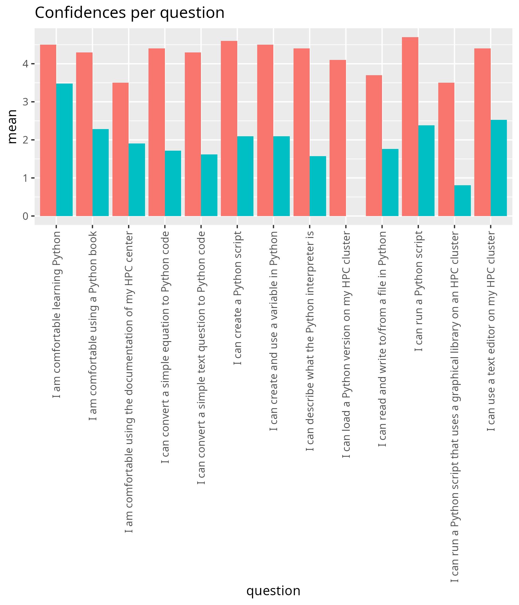
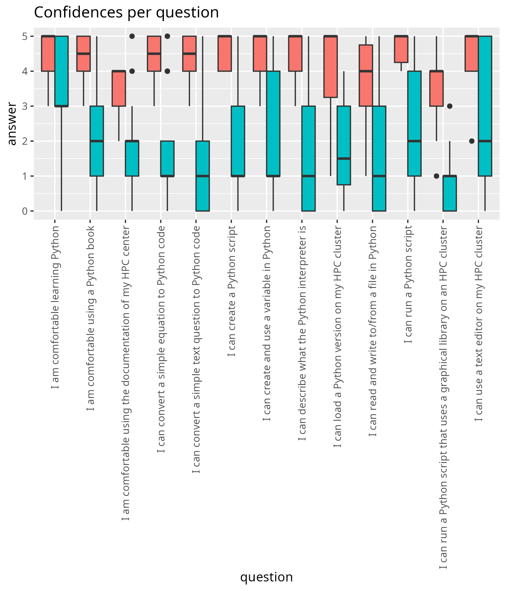
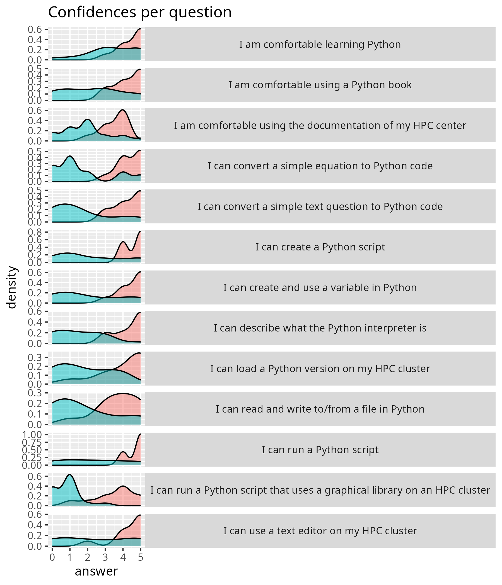

Reflection¶
- Date: 2026-04-20
- Lesson plan
- Evaluation
- Reflection
- Chat
Halfway during teaching¶
The morning felt sluggish.
I was worried about the new Zoom update causing problems. That worry was what caused part of the problem. The clearest example was when I opened the breakout rooms. I intended to allow learners to move around freely. However, it behaved differently. The observer stated that I may have clicked the wrong thing. I felt confident I did the right thing and felt it was likelier that Zoom was the problem. Turned out: she was right. When I felt it was likelier I was the cause (with help from the input from the observer), then suddenly I was able to fix the problem. It was painful, though, to move all the learners into their own breakout rooms.
I did prepare with the new Zoom update, on Friday (with my teaching assistant), on Sunday (with a random person) and this morning again (with my teaching assistant). Still, it was my worry that made me draw a wrong conclusion initially.
The new Zoom interface, however, is definitely more sluggish and less snappy when scrolling though breakout rooms. And with 20 breakout rooms in use, this made my jumping around way slower than usually.
With the sluggish Zoom, I need help for groups of this size.
- [ ] Ask help for each 20 registrations. Train the helpers, using, for example my material on 'Duos in breakout rooms'
Due to the sluggish Zoom (more reasons will follow below), it took the first two hours to do session 1 (out of 3): 'Using the Python interpreter'. I did round it off with a proper Feedback at 10:45. I regret that my observer already had left (I was aware, my course just went unexpectedly sluggish), as it will not help me answer my observation question. I informed her of my regrets. I hope she has seen something that was interesting to her. She will be back later that day, let's hope that there is a proper Feedback then.
In the third hour, I properly introduced the second session, with a proper Feedback at the end.
I measured if I achieved my teaching goal 'Have you been able to run a Python script on your HPC cluster?':

- 13x: Yes
- 1x: No (a Dardel user)
- 3x: No response. However, I know: 1x was done (he just has Zoom problems) and 1x away (he notified us). Only once I think this may have been a 'no'
When assuming the worst, (15 out of 17 is) 88% of my learners have achieved the goals of the morning session. I am unhappy with this. I hope this can be fixed in the afternoon.
Another reason things were sluggish: at least 5 learners had not done the prerequisites. I wish we could put the link to the Zoom room on the HPC clusters, so that we only get learners that actually have done the prerequisites. As this plan is likely to be voted against by the teacher team, the solution that actually worked is to have a dedicated teaching assistant for just this problem. In all previous course iterations, my colleague Pavlin fulfilled this role. Today it was made clear once again how important he is to the smooth proceedings of this course.
- [ ] Suggest to put the Zoom URL on an HPC cluster, else
- [ ] Book a helper (e.g. Pavlin) for login problems
Another reason the course went sluggish: the documentation of some centers is incomplete. There were 2 learners that complained about the Dardel documentation, and 1 about the COSMOS documentation.
My intern was a great help! I have not been able to check him, but I do know him a bit. I know we has helped some learners with their problems successfully. And I have trained him the working day before.
In the end of the morning, I have been able to speak with all learners 1-on-1 at least once. Even though I wish I would have had more contact with them, this course iteration did not work well enough for that.
After teaching¶
The afternoon went super smooth. There were 8 learners, that knew how I work and no longer had technical problems anymore: it was smooth sailing.
In the end, I conclude that these were the reasons for the sluggishness, with the most important first:
- The disruption of learners not having done the prerequisites and no dedicated teaching assistant for helping these
- Zoom responding slower
- Me not trusting Zoom (only the first two hours)
Evaluation results¶
The anonymous feedback for the whole day:
- Great course, thanks!
:-)
- Very good and concise yet cheerful and helpful teaching.
I am happy that my conciseness is appreciated.
- All good I think, I like the pace
I am happy that following the pace of the learners is appreciated.
- Great experience! I needed some time to catch up, but it was good to practice. I believe that I can learn Python! Thank You
I am happy that I could take the time to let this learner catch up. The course goal has been achieved :-)
- The first day of the Python course was really good. Richèl is a great teacher and made the course very enjoyable. I really appreciated that he provided the Python textbook, which was very helpful for learning more and completing the exercises.
I am happy this learner enjoyed this day and the book.
Success score: 84%


Let's go through the lowest rated ones:
- 'I am comfortable using the documentation of my HPC center', with an average confidence of 3.5: this is something that I cannot fix myself. HPC centers vary in the quality of their documentation. And worse: some do not even allow one/me to help improve it
- 'I can run a Python script that uses a graphical library on an HPC cluster', with an average confidence of 3.5: this seems right, as we did not discuss this and, hence, only the faster learners were able to do this.
- 'I can read and write to/from a file in Python' with an average confidence of 3.7: this seems right, as we did not discuss this and, hence, only the faster learners were able to do this.





Did I make a significant difference?
| question | mean_pre | mean_post | p_value | different |
|---|---|---|---|---|
| I am comfortable using the documentation of my HPC center | 1.9047619 | 3.5 | 0.0019357 | TRUE |
| I am comfortable using a Python book | 2.2857143 | 4.3 | 0.0025742 | TRUE |
| I am comfortable learning Python | 3.4761905 | 4.5 | 0.0477565 | TRUE |
| I can load a Python version on my HPC cluster | 1.8000000 | 4.1 | 0.0009491 | TRUE |
| I can describe what the Python interpreter is | 1.5714286 | 4.4 | 0.0000686 | TRUE |
| I can use a text editor on my HPC cluster | 2.5238095 | 4.4 | 0.0180472 | TRUE |
| I can create a Python script | 2.0952381 | 4.6 | 0.0012261 | TRUE |
| I can run a Python script | 2.3809524 | 4.7 | 0.0010292 | TRUE |
| I can run a Python script that uses a graphical library on an HPC cluster | 0.8095238 | 3.5 | 0.0000319 | TRUE |
| I can create and use a variable in Python | 2.0952381 | 4.5 | 0.0022462 | TRUE |
| I can convert a simple equation to Python code | 1.7142857 | 4.4 | 0.0005018 | TRUE |
| I can convert a simple text question to Python code | 1.6190476 | 4.3 | 0.0004542 | TRUE |
| I can read and write to/from a file in Python | 1.7619048 | 3.7 | 0.0072581 | TRUE |
Yes, it seems I have made a significant difference for all learning outcomes. This hints at all sessions being useful.
I wondered if the initial average self-confidence of 2.0 was lower than usual and made an overview at the 'data' page. With other initial average self-confidences of 3.1, 2.2, 3.1 and 1.9 I conclude that 2.0 is a common value (i.e. not an outlier).
Discussion with observer¶
- How did you experience the pace of the session?
She also felt the pace was sluggish. We discussed the causes for this. In the end, we agreed on the multiple factors (i.e. Zoom uncertainty, one helper missing, low amount of camera usage) that we the main cause of the sluggishness.
She also mentioned that, indeed, only half of the learners turned on their cameras. Thanks to this remark, I realized that this indeed is an outlier. I told I estimate 90% usually has the camera on. Just now, I checked my data and 80% seems to be the real value. I had no explanation for this low camera usage. My guesses are: (1) the email sent to the learners is too long and complex, which increased uncertainty in the learners, (2) that same email mentions the recording of learners.
Let's take a look at that email..
What is the email text?
Hello!
This email contains information for the NAISS four days online course “Introduction to Python and Using Python in an HPC environment”, which will be given Monday 20 April, Wednesday 22 April, Thursday 23 April, and Friday 24 April, 2026, 9:00-16:00 each day.
NOTE that the course starts at 9:00 not 9:15! See the schedule linked below, for each day.
We will use Zoom for this online course. See below for zoom link (#10 - last item).
NOTE please go through everything, as there is important information about pre-requirements, how to login, etc. Also be aware that you may need to set up MFA for UPPMAX and NSC, Pocket Pass for LUNARC, and SSH keys/kerberos for PDC (depending on which system you are using), which can take a day to get setup, so do this immediately.
If you have questions about this course, please fill in a support ticket at https://supr.naiss.se/support/. If you do not have a SUPR account, you can send a support mail to training@naiss.se instead, but using the form is recommended.
1) Schedule:
- Logging in and Introduction to Python (Monday): https://uppmax.github.io/naiss_intro_python/schedule/
- Packages and basic analysis (Wednesday): https://uppmax.github.io/HPC-python/schedule.html#day-2-packages-and-basic-analysis
- Advanced analysis and batch jobs (Thursday): https://uppmax.github.io/HPC-python/schedule.html#day-3-advanced-analysis-and-batch-jobs
- Parallelism, GPUs and machine learning (Friday): https://uppmax.github.io/HPC-python/schedule.html#day-4-parallelism-gpus-and-machine-learning
2) Rendered presentations for the course:
- Monday: https://uppmax.github.io/naiss_intro_python/
- Rest of the course: https://uppmax.github.io/HPC-python/
3) Course GH repos
- Monday: https://github.com/UPPMAX/naiss_intro_python
- Rest of the course: https://github.com/UPPMAX/HPC-python
4) Important information about the course is gathered here: https://nextcloud.naiss.se/s/pZTn9dxLZwqmfrt
5) Questions and answers page for the course: https://nextcloud.naiss.se/s/Jbfy4kj3bSJKtfG
6) Please make sure you have an account at SUPR (https://supr.naiss.se/) and at either NSC, PDC, or C3SE (or UPPMAX, if you are affiliated with UU or HPC2N if you are affiliated with UMU, SLU, IRF, LTU, or MIUN, or LUNARC if you are affiliated with LU).
The site account for NSC/PDC/UPPMAX/HPC2N/LUNARC can be applied for through SUPR after you have your SUPR account and have been added to the course project.
The account at SUPR and the accounts at NSC/PDC/HPC2N/UPPMAX/LUNARC are all SEPARATE. You should have already been contacted about getting a SUPR account if you did not have one. You should have also been added to the course project, so you can go to https://supr.naiss.se/account/ and apply for an account if you do not have one.
7) Please make sure you have installed either ThinLinc or an SSH client. ThinLinc is strongly RECOMMENDED for this course and can be installed from https://www.cendio.com/thinlinc/download If you have an account at a centre that has OpenOnDemand or GfxLauncher from inside ThinLinc, you can also use that.
Login info
- UPPMAX – Pelle
- SSH: pelle.uppmax.uu.se
- ThinLinc: pelle-gui.uppmax.uu.se
- HPC2N - Kebnekaise
- SSH: kebnekaise.hpc2n.umu.se
- ThinLinc: kebnekaise-tl.hpc2n.umu.se
- From web browser: https://kebnekaise-tl.hpc2n.umu.se:300/
- OpenOnDemand portal: https://portal.hpc2n.umu.se
- LUNARC – Cosmos
- SSH: cosmos.lunarc.lu.se
- ThinLinc: cosmos-dt.lunarc.lu.se
- GfxLauncher available from inside ThinLinc
- NSC – Tetralith
- SSH: tetralith.nsc.liu.se
- ThinLinc: tetralith.nsc.liu.se
- PDC – Dardel
- SSH: dardel.pdc.kth.se
- Thinlinc: dardel-vnc.nsc.kth.se
- GfxLauncher available from inside ThinLinc
- C3SE – Alvis
- SSH: alvis1.c3se.chalmers.se or alvis2.c3se.chalmers.se
- Remote Desktop Protocol (RDP) connection: https://www.c3se.chalmers.se/documentation/connecting/remote_graphics/
- Open OnDemand portal: https://alvis.c3se.chalmers.se
Note that if you are using Open OnDemand or ThinLinc, you will connect to a graphical interface and do not need a separate X11 server to enable opening graphics and GUIs.
Note that if you are using Windows and do not already have an SSH client you use, we strongly recommend using ThinLinc.
8) Pre-requirements: This page contains some info on getting ready to login (including the above info), but also a short summary/list of links for things like Linux, editors, and coding: https://uppmax.github.io/HPC-python/prereqs.html
9) Course project and policy: As part of the hands-on, you will be given temporary access to a course project, which will be used for running the hands-on examples. There are some policies regarding this, that we ask that you follow:
- You may be given access to the project before the course; please do not use the allocation for running your own codes. Usage of the project before the course means the priority of jobs submitted to it goes down, diminishing the opportunity for you and your fellow participants to run the examples during the course.
- The course project will be open 1-2 weeks after the course, giving the participants the opportunity to test run examples and shorter codes related to the course. During this time, we ask that you only use it for running course related jobs. Use your own discretion, but it could be: (modified) examples from the hands-on, short personal codes that have been modified to test things learned at the course, etc.
- Anyone found to be misusing the course project, using up large amounts of the allocation for their own production runs, will be removed from the course project.
- When the course is no longer active, all files in the attached storage directory will be deleted. Please copy out anything you want to save before that.
Project IDs
- NSC project: naiss2026-4-66
- PDC project: naiss2026-4-66
- C3SE project: naiss2026-4-66
- UPPMAX project: uppmax2025-2-393
- HPC2N project: hpc2n2026-002
- LUNARC project: lu2026-7-57
Project storage directories
- NSC storage directory: /proj/spring-courses-naiss/users/
- PDC storage directory: /cfs/klemming/projects/snic/spring-courses-naiss
- C3SE storage directory: /mimer/NOBACKUP/groups/spring-courses-naiss
- UPPMAX storage directory: /proj/hpc-python-uppmax
- HPC2N storage directory: /proj/nobackup/spring-courses
- LUNARC storage directory: None – use home directory
10) Zoom info for the course:
a) There will be a zoom for the lectures. It is the same zoom link for each day.
b) When you join the Zoom meeting, use your REAL NAME.
c) Please MUTE your microphone when you are not speaking and use the “Raise hand” functionality under the “Participants” window during the lecture. Please do not clutter the Zoom chat. Behave politely!
d) If you have questions during the lectures, you can write them on this page: https://nextcloud.naiss.se/s/Jbfy4kj3bSJKtfG
e) There may be breakout rooms used in the Zoom for the hands-ons and for discussions. Most likely there will be a “silent” room for those who just wish to work on their own, a discussion room (or rooms) for cooperation, and the rest will be in the main room. If you are in the silent room and need help, go to the main room and contact a helper. There will be breakout rooms that can be used if you want individual help. There will also be parallel sessions.
f) Some of the lectures and demos will be recorded, but not the hands-ons sessions. If you ask questions during the lectures, you may thus be recorded. If you do not wish to be recorded, then please keep your microphone muted and your camera off and write your questions in the Q/A document.
ZOOM (same each day):
1. Zoom: [Link]
2. Meeting ID: [Meeting ID]
3. Passcode: [Passcode]
See you Monday!
Sahar, Richel, Pedro, Jayant, Björn, Birgitte
I feel it is mostly the length of the email that may make the learners uncomfortable. The mentioning of recording is not that prominent. I will suggest to send shorter emails to the learners, or to encourage camera usage.
-
[ ] Suggest to send shorter emails to the learners and/or encourage camera usage in that email
-
Did the parts of the introduction flow into each other naturally?
She said the parts flowed naturally into one another. She did mention that the Priors felt rushed. And I agree with that. My intention is to ask a question, wait three seconds and then prompt for an answer. I feel that due to Zoom uncertainty I went too quick.
- [ ] Wait 3 seconds after asking a question in the Prior
We discussed the Prior a bit and she suggested to also show the question visually as text. I agreed with that idea; to have two types of inputs and I did look for captions in Zoom (and could not find it). However, I feel I should at least try this once, to see how this feels.
-
[ ] Try out two input methods for asking a question in the Prior
-
Was there a part that had an unclear purpose?
No.
Then we discussed some other things, such as Cold Calling. She suggested to try out a soft group activity, e.g. list three things that all three breakout room people have in common. In that way, people feel less more comfortable during the Cold Calling.
- [ ] Try out a soft group activity
Additionally, it was suggested to use the Zoom 'Yes'/'No' reactions instead of a 'Raise Hand' to put people into individual Breakout rooms. I use 'Raise Hand' to get those people to be sorted to the top of the participant list. However, 'Yes'/'No' reactions forces everyone to respond.
- [ ] Try out to use 'Yes'/'No' reaction (instead of 'Raise Hand') for asking for a single breakout room
Besides that we discussed some other things:
- Always doing what is best for learning, or giving a bit of leeway to our learners for some personal preferences that are unhelpful to learning (e.g. forcing people to work together)
- Cold Calling versus more voluntary responses
- Observing teachers